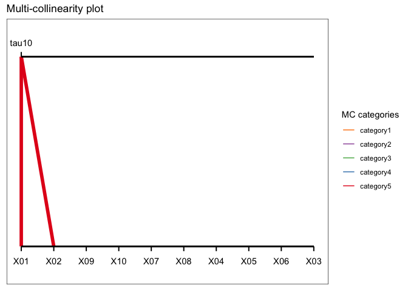

Introduction
mcvis is a R package for visualising multicollinearity in a data design matrix. The underlying methodology uses resampling techniques to identify groups of variables that causes multicollinearity.
You can learn more about mcvis from this vignette.
A quick example
Using a mcvis bipartite plot, variables (bottom row) that cause strong collinearity are visualised as bolded lines connecting with our “tau” statistics (top row).
library(mcvis)
set.seed(1)
p = 10
n = 100
X = matrix(rnorm(n*p), ncol = p)
## Inducing collinearity into the design matrix
X[,1] = X[,2] + rnorm(n, 0, 0.1)
mcvis_result = mcvis(X)
ggplot_mcvis(mcvis_result)